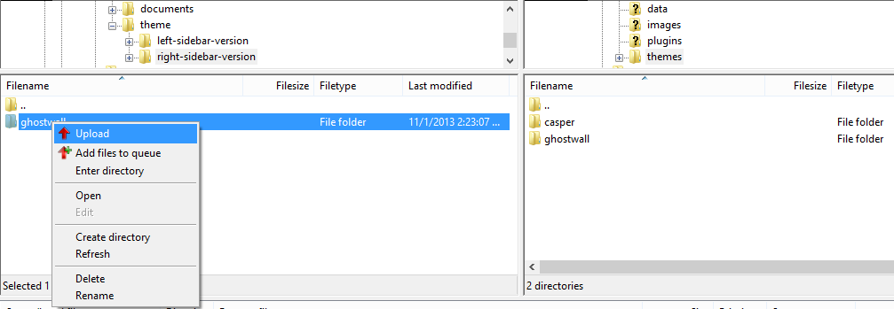
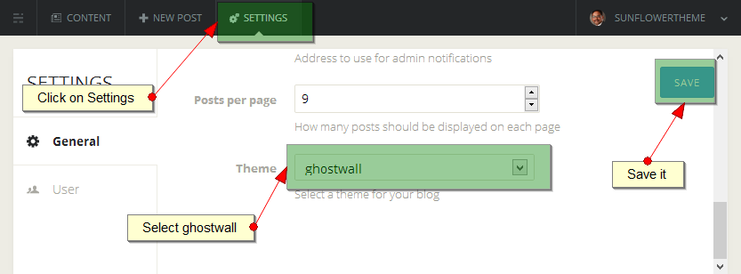
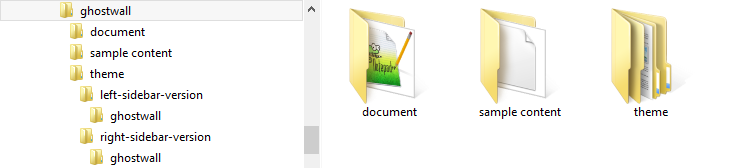
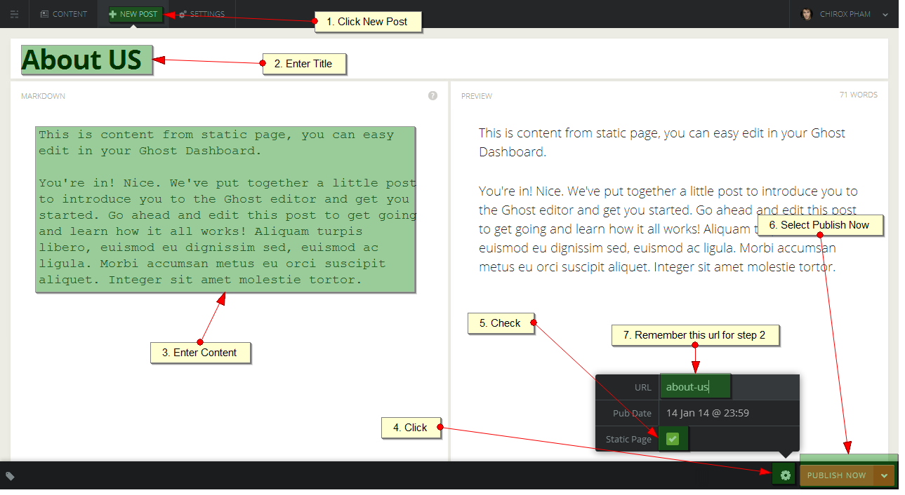

Thank you very much for purchasing my item.
If you have any issue or question that this document does not cover, you can contact us via profile page here. Thanks so much!
Table of Contents
1. Theme Version
Version number: 1.2.1
Date of release: 03/28/2014
2. Change Logs
= 03/28/2014 v1.2.1 ==> Add Ghost 0.4.2 compatible ==> Add Tag page = 01/15/2014 v1.2 ==> Add Ghost 0.4 compatible version ==> Add Featured Post Ribbon ==> Add Static pages support ==> Add Menu support ==> Encode Post Title and Post Excerpt for social share button ==> Optimize: infinite scroll ==> Update: Update document = 12/06/2013 v1.1 ==> Add: 3 comment system option: Disqus Comment, Facebook Comment, Google Plus Comment ==> Add: Code Syntax Highlight ==> Add: Home post meta option with date of post and comment count ==> Add: Tags filter count option ==> Fix: Tags filter format capitalize ==> Update: Update document = 11/13/2013 v1.0 ==> Initial Release 1.0.0
3. Install
3.1 Unzip the main file you've downloaded from themeforest.net
3.2 Select version:
Ghost v0.3.x
- Left sidebar version: select folder theme/ghost-0.3.x/left-sidebar-version/ghostwall
- Right sidebar version: select folder theme/ghost-0.3.x/right-sidebar-version/ghostwall
Ghost v0.4.x
- Left sidebar version: select folder theme/ghost-0.4.x/left-sidebar-version/ghostwall
- Right sidebar version: select folder theme/ghost-0.4.x/right-sidebar-version/ghostwall
3.3 Upload ghostwall folder to content/themes/ on ghost hosting folder.

3.4 Restart the service of ghost.
3.5 Login to your Ghost admin, click on the settings options. Select your Theme name in the 'Theme' options dropdown, save it and you are set up with the theme now.

Enjoy!
4. Getting to know the Theme
Once downloaded, unzip the compressed folder to see the structure of Theme. You'll see something like this:

4.1 Main Theme Structure
This theme has a fixed layout with a variety of column layouts depending on the page. This theme uses the 1200 grid system (12 columns) which will help streamline any customization you wish to make. If you're unfamiliar with the 1200 grid system, be sure to read about it here.
4.2 Css
All css file place in assets/css folder, contains:
- bootstrap.min.css - The main stylesheet that required for a basic theme styling like form, input, div, list element and etc.
- font-awesome.min.css- The stylesheet for font awesome.
- prettyPhoto.css - The stylesheet for jQuery Pretty Photo plugin.
- colors.css - 15 colors defined for this theme.
- screen.css - The main stylesheet you are encouraged to modify.
- custom.css - The plain stylesheet that you can put your custom css.
The main CSS file (screen.css) contains all of the specific styling for the page. The file is separated into sections using:
/*================================================================*/ /* TABLE OF CONTENT 1. COMMON STYLE 2. SOCIAL NEXTWORK ICONS 3. INTRO BOX 4. CONTENT 5. WIDGET 6. SHORT CODES 7. FOOTER 8. RESPONSIVE SETTING */ /*================================================================*/
If you would like to edit a specific section of the site, simply find the appropriate label in the css file, and then scroll down until you find the appropriate style that needs to be edited.
4.3 Javascript
All javascript file place in assets/js folder, contains:
- bootstrap.min.js - The Bootstrap Framework Javascript.
- jqBootstrapValidation.js- The jQuery Form Validation plugin.
- jquery.easing.1.3.js - The jQuery effect plugin.
- jquery.fitvids.js - The jQuery Plugin auto fix width for videos.
- jquery.flickr.js - The jQuery Flickr plugin.
- jquery.infinitescroll.js - The jQuery Infinite Scroll plugin.
- jquery.instagram.js - The jQuery Instagram plugin.
- jquery.isotope.min.js - The jQuery Isotope plugin.
- jquery.prettyPhoto.js - The jQuery Pretty Photo plugin.
- jribbble.js - The jQuery Dribbble plugin.
- sscr.js - The Smooth scroll plugin.
- config.js - The Global Variables Define for GhostWall.
- main.js - The main javascript for GhostWall.
The main javascript (main.js) contains all of scripts for GhostWall. The file is separated into sections using:
/*================================================================*/ /* TABLE OF CONTENT 1. Global Variables Define 2. Common function 3. Initialing */ /*================================================================*/
5. Setting Up The Theme
5.1 Change Theme color
If you would like to change the color for Theme,
open file assets/css/colors.css:
+ Comment all lines of import color css you don't use.
+ Uncomment line of import color css you want to uses.
Here is example, you want to use muted-teal color:
/*@import url('colors/default.css');*/
/*@import url('colors/corporate-blue.css');*/
/*@import url('colors/darkcyan.css');*/
/*@import url('colors/dark-slate-gray.css');*/
/*@import url('colors/dodger-blue.css');*/
/*@import url('colors/golden-rod.css');*/
/*@import url('colors/green.css');*/
/*@import url('colors/hot-pink.css');*/
/*@import url('colors/indian-red.css');*/
/*@import url('colors/medium-violet-red.css');*/
@import url('colors/muted-teal.css');
/*@import url('colors/orange.css');*/
/*@import url('colors/sea-green.css');v
/*@import url('colors/soft-green.css');*/
/*@import url('colors/yellow.css');*/
5.2 Change Font
We are using the google web font, if you would like to font for the GhostWall, open file assets/css/screen.css, change google web font css url at line 1 and change font-family at line 5.
@import url(YOUR_GOOGLE_WEB_FONT_URL_HERE);
*, body {
font-family: YOUR_GOOGLE_FONT_NAME_HERE;
...................................
}
5.3 Change main background pattern
File: assets/css/main.css
.pattern{
background:YOUR_COLOR_CODE url('../img/YOUR_FILE_NAME_HERE') repeat;
}
5.4 Change Social Network Icons
In this section you can change Social Network Icons on the header
File: partials/header.hbs
<ul class="social"> <li class="twitter"> <a href="#" target="_blank" title="Twitter"> <i class="fa fa-twitter"></i> </a> </li> <li class="facebook"> <a href="#" target="_blank" title="Facebook"> <i class="fa fa-facebook"></i> </a> </li> <li class="google"> <a href="#" target="_blank" title="Google"> <i class="fa fa-google-plus"></i> </a> </li> <li class="linkedin"> <a href="#" target="_blank" title="Linkedin"> <i class="fa fa-linkedin"></i> </a> </li> <li class="skype"> <a href="#" target="_blank" title="Skype"> <i class="fa fa-skype"></i> </a> </li> <li class="rss"> <a href="/rss/" target="_blank" title="Rss Feed"> <i class="fa fa-rss"></i> </a> </li> </ul>
How to find social icon? Template using the Font Awesome for social icon, check out this link http://fortawesome.github.io/Font-Awesome/icons/#brand for more info.
5.5 Menu Config (Apply for Ghost v0.4.x only)
Since Ghost v0.4.x you can create a post with option is Static Page and intergate to theme menu.
In this section you can Add/Edit Menu display on Top
-
Step 1: Create a Static Page

-
Step 2: Intergate to Menu
Open File: partials/nav.hbs and follow the instruction below
<ul class="nav main-nav collapse navbar-collapse"> <!-- Begin menu item 1--> <li class="active"> <!-- Keep href="{{@blog.url}}" for home page--> <a href="{{@blog.url}}"> Home <!-- Change text of menu here--> </a> </li> <!-- End menu item 1--> <!-- Begin menu item 2--> <li> <!-- 1. Change href: {{@blog.url}}/YOUR_STATIC_PAGE_URL_FROM_STEP_1/ Example: {{@blog.url}}/about-us/ --> <a href="{{@blog.url}}/about-us/"> About Us <!-- Change text of menu here--> </a> </li> <!-- End menu item 2--> <!-- Begin menu item 3--> <li> <!-- 1. Change href: {{@blog.url}}/YOUR_STATIC_PAGE_URL_FROM_STEP_1/ Example: {{@blog.url}}/get-in-touch/ --> <a href="#"> Get In Touch <!-- Change text of menu here--> </a> </li> <!-- End menu item 3--> </ul>
5.6 Change Get In Touch Content
5.6.1 Change Contact Info
In this section you can change your address, phone number and email display on footer
File: partials/widget-get-in-touch.hbs
<ul class="vcard"> <li> <span class="vcard-icon"><i class="fa fa-home"</i></span> <span class="vcard-text">677 Tan Son Street, Ho Chi Minh, VN</span> </li> <li> <span class="vcard-icon"><i class="fa fa-phone"></i></span> <span class="vcard-text">(+84) 909 53 6892</span> </li> <li> <span class="vcard-icon"><i class="fa fa-envelope"></i></span> <span class="vcard-text">info@yourdomain.com</span> </li> </ul>
5.6.2 Config MailChimp Newsletter Widget
In this section you can change the intro text (line 19) and mailchimp submit url (line 21) that use of MailChimp Newsletter Widget
File: partials/widget-get-in-touch.hbs
<p> Sign up to receive email updates and to hear what's going on with me! </p> <form id="mc-form" action="YOUR_WEB_FORM_URL_HERE" method="post" novalidate="true"> <div class="input-group"> <input id="mc-email" type="email" name="EMAIL" placeholder="Email address" class="form-control" required > <span class="input-group-btn"> <button class="btn btn-default" type="submit">Subscribe</button> </span> </div> </form>
Check out this link for more detail about adding mailchimp form to your widget. Note: In this case you only need to copy web form action and change for YOUR_WEB_FORM_URL_HERE (line 7).
5.7 Config Google Map Widget
In this section you can change your Latitude and Longitude display on Google Map Widget
File: assets/js/main.js
var your_latitude = 10.839776; // Your map latitude var your_longitude = 106.647159; // Your map longitude
How to find Latitude and Longitude? Click here for more detail.
5.8 Config Sidebar
In this section you can turn on / turn off any widget that uses on GhostWall
File: partials/sidebar.hbs
{{!
In this file you can turn on/off sidebar that you want
+ Add ! to a ahead of > on each sidebar to turn off
+ Remove ! to turn on
}}
{{> widget-recent-posts}}
{{> widget-flickr}}
{{!> widget-instagram}}
{{!> widget-dribbble}}
{{> widget-text}}
5.9 Config Recent Posts Widget
In this section you can change the number of post item you want to display on the Recent Posts Widget.
File: partials/widget-recent-posts.hbs
<div class="recent-post" data-size="5" data-desc="true" data-pubdate="false" data-character-limit="100"> </div>
data-size: number of post item you want to display
data-desc: show post description
data-character-limit: limit number of characters for post description
data-pubdate: show publish date
5.10 Config Flickr widget
In this section you can change Flickr user id, change number of images you want to display on the Flickr Widget.
File: assets/js/main.js
var flickr_id='YOUR_FLICKR_ID_HERE';
File: partials/widget-flickr.hbs
<ul class="flickr-feed" data-mode="gallery" data-size="12" data-popup-preview="true"> </ul>
data-size: number of images you want to display
data-popup-preview: prettyPhoto plugin integration for preview image
How to find flickr id?
Use http://idgettr.com tool to find your Flickr user or group id. Just enter the address of your photostream or group pool and it'll find the number for you.
5.11 Instagram Widget
In this section you can change the Instagram user name, change number of images you want to display on the Instagram Widget.
File: assets/js/main.js
var instagram_accessToken='your-instagram-access-token'; // change [your-instagram-access-token] here var instagram_clientID='your-instagram-application-clientID'; // change [your-instagram-application-clientID] here
File: partials/widget-instagram.hbs
<ul class="instagram-feed" data-mode="gallery" data-display="12" data-popup-preview="true"> </ul>
data-display: number of images you want to display
data-popup-preview: prettyPhoto plugin integration for preview image
How to find Access Token and ClientID?
Check out this link for more detail
5.12 Enable Home Meta Post
File: index.hbs at line 33
<div class="wrap">
<h2 class="post-title"><a href="{{url}}">{{{title}}}</a></h2>
<div class="post-excerpt">
{{content words="0"}} {{excerpt}} ... <a class="read-more" href="{{url}}">Read more »</a>
</div>
{{>home-meta-post}}
</div>
If you want to Disable Home Meta Post just change line 33 to {{!>home-meta-post}}
5.13 Comment System Config
5.13.1 Disqis Comment (Default config in your download)
By Default, this theme supports comments supplied by Disqus (http://disqus.com). For assistance in setting up your own Disqus account and customizing it for your needs, please see the Disqus QuickStart Guide: http://help.disqus.com/customer/portal/articles/466182-quick-start-guide
Change content in files below to turn on Disqis Comment
File: partials/comment-config.hbs
{{!>googleplus-comment-config}}
{{!>facebook-comment-config}}
{{>disqus-comment-config}}
File: partials/disqus-comment-form.hbs, replace YOUR_DISQUS_SHORTNAME with your Disqis shortname.
<script type="text/javascript">
var disqus_shortname = 'YOUR_DISQUS_SHORTNAME';
/* * * DON'T EDIT BELOW THIS LINE * * */
(function() {
var dsq = document.createElement('script'); dsq.type = 'text/javascript'; dsq.async = true;
dsq.src = '//' + disqus_shortname + '.disqus.com/embed.js';
(document.getElementsByTagName('head')[0] || document.getElementsByTagName('body')[0]).appendChild(dsq);
})();
</script>
If you have enabled Home Post Meta, please follow above.
File: partials/home-meta-post.hbs
<span class="comment pull-right">
{{!>facebook-comment-count}}
{{!>googleplus-comment-count}}
{{>disqus-comment-count}}
</span>
Next, you will need a Disqis Application API PublicKey, check out this link to register Disqis Application API.
File: partials/disqus-comment-config.hbs, replace YOUR_DISQUS_SHORTNAME with your Disqis shortname and replace YOUR_DISQUS_APP_API_PUBLIC_KEY with your Public Key.
<script> var disqusPublicKey = "YOUR_DISQUS_APP_API_PUBLIC_KEY"; var disqusShortname = "YOUR_DISQUS_SHORTNAME"; // Replace with your own shortname </script>
5.13.2 Facebook Comment
Change content in files below to turn on Facebook Comment
File: partials/comment-config.hbs
{{!>googleplus-comment-config}}
{{>facebook-comment-config}}
{{!>disqus-comment-config}}
You will need a Facebook Application ID, check out this link to register Facebook Application.
File: partials/facebook-comment-config.hbs, replace YOUR_APP_ID with your Facebook Application ID.
<script>
(function(d, s, id) {
var js, fjs = d.getElementsByTagName(s)[0];
if (d.getElementById(id)) return;
js = d.createElement(s); js.id = id;
js.src = "//connect.facebook.net/en_US/all.js#xfbml=1&appId=YOUR_APP_ID";
fjs.parentNode.insertBefore(js, fjs);
}(document, 'script', 'facebook-jssdk'));
</script>
If you have enabled Home Post Meta, please follow above.
File: partials/home-meta-post.hbs
<span class="comment pull-right">
{{>facebook-comment-count}}
{{!>googleplus-comment-count}}
{{!>disqus-comment-count}}
</span>
5.13.3 Google Plus Comment
Change content in files below to turn on Google Plus Comment
File: partials/comment-config.hbs
{{>googleplus-comment-config}}
{{!>facebook-comment-config}}
{{!>disqus-comment-config}}
If you have enabled Home Post Meta, please follow above.
File: partials/home-meta-post.hbs
<span class="comment pull-right">
{{!>facebook-comment-count}}
{{>googleplus-comment-count}}
{{!>disqus-comment-count}}
</span>
6. Writing Posts
There are some notes when you write posts:
+ Put image () in the top of post for image thumbnail post type
+ Put soundcloud embed code in the top of post for audio post type. Example:
<iframe height="166" src="https://w.soundcloud.com/player/?url=https://api.soundcloud.com/tracks/104708200"></iframe>
+ Put youtube embed code in the top of post for youtube video post type. Example:
<iframe width="560" height="315" src="//www.youtube.com/embed/aeLTx-ZhlFQ"></iframe>
+ Put vimeo embed code in the top of post for vimeo video post type. Example:
<iframe src="//player.vimeo.com/video/77270043" width="500" height="281"></iframe>
7. Using Shortcodes
At present GhostWall only support html shortcode from BootStrap Framework. Check out this link, copy short code and paste to post content area.
8. Custom Theme
File: assets/css/custom.css
Add your custom styles here instead of screen.css so it is easier to update your theme. Simply copy an existing style from screen.css to this file, and modify it to your liking.
9. Update
File & folder changes:
= index.hbs = Add: tag.hbs
9.1 Backup your file:
- index.hbs
9.2 Upload:
Upload file index.hbs and tag.hbs to your host
9.3 Restart your ghost
We tread on the heels of Ghost. If you need any extra or feature just email us and we will include it in the next update.
10. Credits
10.1 Javascript
GhostWall uses several scripts many of which are documented within the theme's code. If you're a developer, you will find this particularly useful.
10.2 Images
Images showed on preview files are from pixabay.com and subtlepatterns.com. Being designed with multipurpose attitude in mind, we showed some images on our preview files so you can have an idea what can be accomplished. Not a single image file is included with the download, they were just for demo purposes due to copyright.
10.3 Fonts
- Google Fonts - http://www.google.com/webfonts
- Font Awesome - http://fortawesome.github.com/Font-Awesome/
Once again, thank you so much for purchasing this theme. As I said at the beginning, I'd be glad to help you if you have any questions relating to this theme. Please contact me via email or social media. I'll do my best to assist!